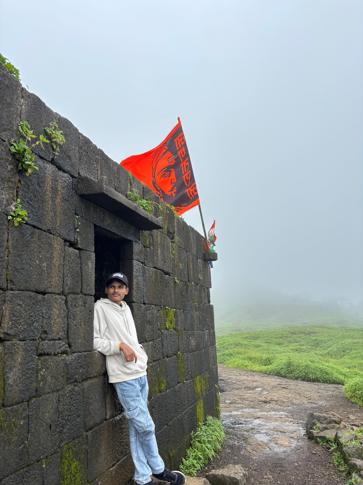

About
I'm Showrya — a penetration tester based in Hyderabad, working at the intersection of offense and documentation. My job isn't just breaking into systems; it's proving exactly how and telling someone how to close the door behind me.
I got into security the way most people in this field do: by taking things apart to see how they work, then wondering how they break. That curiosity turned into structured practice — I've now cleared 450+ hands-on labs on TryHackMe across network, web, and Active Directory attack paths, and hold the eJPT certification from INE.
Day to day, I work across three fronts: network penetration testing (recon → exploitation → privilege escalation on Linux and Windows), web application security (manual testing for SQLi, XSS, IDOR, SSRF, and business logic flaws), and Active Directory assessments — enumeration, Kerberoasting, AS-REP Roasting, and BloodHound-driven attack path mapping.
I write things down. Every engagement or lab turns into a proof-of-concept write-up and a remediation note, because a finding nobody can act on isn't worth much. Outside of assigned labs, I build my own reconnaissance tooling in Python — see projects — and I'm currently working through PortSwigger's Web Security Academy while doing bug bounty recon and vulnerability validation on the side.

Background
B.Tech, Computer Science & Engineering (Cybersecurity)
CMR Institute of Technology, Hyderabad · CGPA 7.8 / 10Specialized coursework in cybersecurity alongside core CS — the formal half of a path that's mostly been built through labs, CTFs, and independent tooling.